청소년상담사-1급(2교시) (2016-10-01 기출문제)
1과목: 비행상담
1. 청소년비행을 다음과 같이 설명한 학자는?
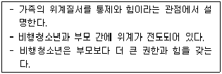
- 사티어(V. Satir)
- 헤일리(J. Haley)
- 프로이드(S. Freud)
- 위니컷(D. Winnicott)
- 마다네스(C. Madanes)
(정답률: 알수없음)

2. 드레이커스(R. Dreikurs)가 제안한 아동의 파괴적 행동의 네 가지 목적이 아닌 것은?
- 접촉하기
- 복수하기
- 관심 끌기
- 힘의 추구
- 가장된 무능력
(정답률: 알수없음)
3. 학교폭력 이론에 관한 설명으로 옳지 않은 것은?
- 학습이론: 폭력행동은 강화와 모방을 통해 학습된 결과이다.
- 사회통제이론: 학교에서 교사와 성인의 감독이 소홀하면 학교폭력 비율이 증가한다.
- 각성이론: 각성수준이 높으면 상과 벌에 대한 반응력이 떨어져 반사회적 행동에 따른 벌을 피하는 것을 학습하는 데 어려움이 있다.
- 애착이론: 생의 초기에 일차적인 보호자와 격리된 아동은 도덕적인 사회적 상호관계를 하는 내적 작동모델이 부정적으로 형성되어 폭력행위를 할 수 있다.
- 생태이론: 학교폭력은 개인적 특성, 학교와 지역사회의 특성, 학생의 가정배경, 학생의 문화적 맥락과 같은 보다 넓은 사회적 맥락의 상호작용에 의한 것이다.
(정답률: 알수없음)
4. 다음에서 설명하는 비행이론은?
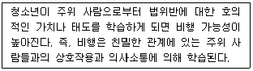
- 머튼(R. Merton)의 아노미이론
- 허쉬(T. Hirschi)의 사회유대이론
- 애그뉴(R. Agnew)의 일반긴장이론
- 서덜랜드(E. Sutherland)의 차별접촉이론
- 쇼우(C. Shaw)와 멕케이(H. McKay)의 사회해체이론
(정답률: 알수없음)
5. 소년법의 내용으로 옳은 것은?
- "소년"이란 18세 미만인 자를 말한다.
- 형벌 법령에 저촉되는 행위를 한 9세 이상 14세 미만인 소년은 소년부의 보호사건으로 심리한다.
- 보호처분 제1호는 수강명령이다.
- 보호처분 제3호의 처분은 12세 이상의 소년에게만 할 수 있다.
- 보호처분 제1호ㆍ제2호ㆍ제3호ㆍ제4호 처분 상호 간에는 그 전부 또는 일부를 병합할 수 있다.
(정답률: 알수없음)
6. 아동ㆍ청소년의 성보호에 관한 법률의 내용으로 옳은 것은?
- 폭행 또는 협박으로 아동ㆍ청소년을 강간한 사람은 무기징역 또는 3년 이상의 유기징역에 처한다.
- 아동ㆍ청소년이용음란물을 제작ㆍ수입 또는 수출한 자는 무기징역 또는 5년 이상의 유기징역에 처한다.
- 19세 이상의 사람이 장애 아동ㆍ청소년을 간음하거나 장애 아동ㆍ청소년으로 하여금 다른 사람을 간음하게 하는 경우에는 1년 이상의 유기징역에 처한다.
- 아동ㆍ청소년에 대하여 폭행이나 협박으로 성기ㆍ항문에 손가락 등 신체(성기는 제외한다)의 일부나 도구를 넣는 행위를 한 자는 3년 이상의 유기징역에 처한다.
- 영리를 목적으로 아동ㆍ청소년이용음란물을 판매ㆍ대여ㆍ배포ㆍ제공하거나 이를 목적으로 소지ㆍ운반하거나 공연히 전시 또는 상영한 자는 5년 이하의 징역 또는 3천만원 이하의 벌금에 처한다.
(정답률: 알수없음)
7. 다음에서 설명하는 비행이론은?
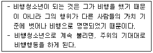
- 낙인이론
- 갈등이론
- 중화이론
- 억제이론
- 하위문화이론
(정답률: 알수없음)
8. 후기 아동기나 청소년기로 접어들면서 자기정체성을 제대로 확립하지 못하면, 정체성 혼란으로 인하여 가출, 폭력 등의 비행행동을 할 수 있다고 주장한 학자는?
- 아들러(A. Adler)
- 에릭슨(E. Erikson)
- 반두라(A. Bandura)
- 미누친(S. Minuchin)
- 페어번(R. Fairbairn)
(정답률: 알수없음)
9. 카(A. Carr)가 주장한 아동ㆍ청소년기의 문제행동에 영향을 주는 요인 중 보호요인으로 옳은 것은?
- 허용적인 양육
- 까다로운 기질
- 내적 통제소재
- 가족 체계의 삼각화
- 문제행동의 조기 시작
(정답률: 알수없음)
10. CYS-Net에 관한 설명으로 옳은 것을 모두 고른 것은?
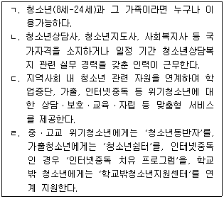
- ㄱ, ㄴ
- ㄴ, ㄷ
- ㄷ, ㄹ
- ㄱ, ㄴ, ㄷ
- ㄴ, ㄷ, ㄹ
(정답률: 알수없음)
11. 우리 정부가 발표한「제3차 학교폭력 예방 및 대책 기본계획」의 5대 분야가 아닌 것은?
- 학교폭력 예방 안전 인프라 확충
- 인성 교육 중심 학교폭력 예방 강화
- 공정한 사안처리 및 학교 역량 강화
- Wee 프로젝트 중심의 대응체제 구축
- 피해학생 보호ㆍ치유 및 가해학생 선도
(정답률: 알수없음)
12. 청소년쉼터 이용에 관한 설명으로 옳은 것을 모두 고른 것은?
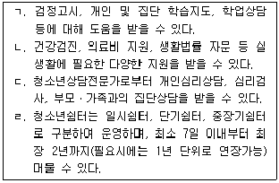
- ㄱ, ㄴ
- ㄴ, ㄷ
- ㄷ, ㄹ
- ㄱ, ㄴ, ㄷ
- ㄱ, ㄴ, ㄷ, ㄹ
(정답률: 알수없음)
13. 한국청소년상담복지개발원이 지원 또는 운영하는 사업이 아닌 것은?
- 인터넷치유캠프
- 솔리언 또래상담
- 또래조정프로그램
- 청소년사회안전망운영
- 청소년지원센터 꿈드림
(정답률: 알수없음)
14. 와이너(I. Weiner)의 사회적 비행 상담의 주요 과제로 옳은 것을 모두 고른 것은?
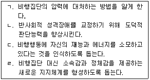
- ㄱ, ㄴ
- ㄷ, ㄹ
- ㄱ, ㄴ, ㄷ
- ㄱ, ㄷ, ㄹ
- ㄴ, ㄷ, ㄹ
(정답률: 알수없음)
15. 청소년백서(2015)에 보고된 청소년 범죄 현황으로 옳지 않은 것은?
- 청소년 범죄의 시작 연령이 낮아지고 있다.
- 청소년 범죄의 재범률이 증가하고 있다.
- 청소년 범죄 중 여자소년의 범죄율은 증가하고 있다.
- 청소년 범죄의 재산범 중 절도범의 비율이 가장 높다.
- 향정신성의약품 관련 청소년 범죄의 경우 본드 흡입이 가장 많다.
(정답률: 알수없음)
16. 소년 보호사건에 관한 설명으로 옳지 않은 것은?
- 소년 보호사건의 심리와 처분 결정은 소년부 단독판사가 한다.
- 정당한 이유 없이 가출한 10세 소년이 절도를 할 우려가 있다면 우범소년이다.
- 12세 소년이 친구들과 어울려 본드 흡입을 하였다면 촉법소년이다.
- 촉법소년과 범죄소년은 담당 형사가 직접 관할 소년부에 송치한다.
- 소년부 또는 조사관이 범죄 사실에 관하여 소년을 조사할 때에는 미리 소년에게 불리한 진술을 거부할 수 있음을 알려야 한다.
(정답률: 알수없음)
17. 비행청소년 성격평가에 사용되는 PAI-A(Personality Assessment Inventory for Adolescent)에 관한 설명으로 옳은 것은?
- 표준화된 검사로 22개의 하위요인, 총 346문항으로 구성되어 있다.
- 대인관계 척도는 지배성, 온정성을 측정한다.
- 타당도 척도는 비일관적 반응, 저빈도, 스트레스를 측정한다.
- 치료고려 척도는 자살관념, 비지지, 치료거부, 긍정적 인상을 측정한다.
- 임상 척도는 불안, 우울, 망상, 경계선적 특징, 조증, 반사회적 특성, 공격성을 측정한다.
(정답률: 알수없음)
18. 청소년 비행의 개념에 관한 설명으로 옳은 것은?
- 범죄소년은 비행청소년에 해당되지 않는다.
- 청소년 비행은 지위비행을 포함하지 않는다.
- 청소년 비행의 의미는 시대나 문화에 따라 변하지 않는다.
- 청소년 비행은 보호 및 교육보다는 처벌의 관점이 중요하다.
- 청소년에게 기대되는 규범에 벗어난 일탈행동도 청소년 비행이다.
(정답률: 알수없음)
19. 학교폭력 예방을 위한 학교의 대책으로 옳지 않은 것은?
- 학교전담경찰관 배치 및 운영
- 학교 내 청소년 꿈키움센터 운영
- 학교 범죄예방환경설계(CPTED) 적용
- 학교 내 영상정보처리기기(CCTV) 설치
- 학교보안관, 배움터지킴이 등 학생보호인력 운영
(정답률: 알수없음)
20. 전국경찰서에서 청소년 범죄자를 대상으로 실시하고 있는 「비행촉발요인조사」에 포함되는 내용을 모두 고른 것은?
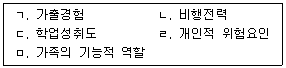
- ㄱ, ㄴ, ㄹ
- ㄱ, ㄷ, ㅁ
- ㄱ, ㄴ, ㄹ, ㅁ
- ㄴ, ㄷ, ㄹ, ㅁ
- ㄱ, ㄴ, ㄷ, ㄹ, ㅁ
(정답률: 알수없음)
21. 비행청소년을 상담하기 위해 아들러(A. Adler)의 이론을 사용한다면 상담자가 가장 먼저 해야 하는 것은?
- 내담자와 동등하고 평등한 관계를 형성한다.
- 내담자의 비행에 영향을 준 무의식을 확인한다.
- 내담자의 비행에 영향을 준 강화요인을 확인한다.
- 내담자의 비행에 영향을 준 생활양식을 평가한다.
- 내담자가 변화할 수 있도록 격려를 통해 재정향한다.
(정답률: 알수없음)
22. 학교폭력 가해자인 15세 소년의 인지기능을 평가하기 위해 사용하는 검사는?
- MMPI-2
- K-CBCL
- K-WPPSY
- K-WAIS-Ⅳ
- K-WISC-Ⅳ
(정답률: 알수없음)
23. 비행청소년을 대상으로 집단상담을 실시할 경우 고려사항으로 옳지 않은 것은?
- 집단원 선별 시 비행의 암묵적인 연결고리를 고려한다.
- 비자발적 참여태도를 누그러뜨리기 위한 워밍업을 실시한다.
- 집단상담시간은 집중력을 고려하여 90분을 넘지 않도록 한다.
- 상호작용을 촉진하기 위하여 개방집단보다는 폐쇄집단으로 운영한다.
- 집단원이 많을수록 역동이 잘 일어나므로 집단의 크기를 크게 구성한다.
(정답률: 알수없음)
24. 헤어(R. Hare)의 PCL-R(Psychopathy Checklist-Revised)의 4요인 중 생활방식에 해당하는 것을 모두 고른 것은?
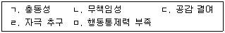
- ㄱ, ㄴ, ㄹ
- ㄱ, ㄷ, ㄹ
- ㄴ, ㄷ, ㅁ
- ㄱ, ㄴ, ㄷ, ㄹ
- ㄴ, ㄷ, ㄹ, ㅁ
(정답률: 알수없음)
25. 학교폭력 예방을 위해 교육부에서 보급한 어울림 프로그램에 해당하지 않는 것은?
- 인지조절
- 감정조절
- 의사소통
- 자기존중감
- 학교폭력 인식 및 대처
(정답률: 알수없음)
2과목: 성상담
26. 성지식을 묻는 상담에서 상담자의 답변으로 옳지 않은 것은?
- 한번 사용한 콘돔은 다시 사용하면 안 됩니다.
- 친구가 강간하는데 근처에서 망을 봐주는 경우는 처벌받지 않습니다.
- 고등학교 남자 아이가 성적인 호기심이 드는 것은 자연스러운 현상입니다.
- 첫 성관계 시 처녀막 파열로 출혈이 되는 경우는 전체 여성의 50% 정도입니다.
- 진성포경은 성기 발육에 지장을 줄 수 있고 염증을 일으키기 때문에 수술을 할 필요가 있습니다.
(정답률: 알수없음)
27. 상대방의 의사에 반하여 지속적으로 접근을 시도하고 면회 또는 교제를 요구하거나 지켜보기, 따라다니기, 잠복하여 기다리기 등을 반복하여 하는 행위를 칭하는 용어는?
- 강제추행
- 스토킹
- 유사강간
- 준강간
- 성희롱
(정답률: 알수없음)
28. 아동ㆍ청소년의 성보호에 관한 법률에 명시된 성범죄자 취업제한 시설이 아닌 것은?
- 대형마트
- 체육시설
- 유치원
- 대중문화예술기획업소
- 공동주택의 관리사무소
(정답률: 알수없음)
29. 성병의 전파 경로에 관한 내용으로 옳지 않은 것은?
- 트리코모나스증: 원충류 기생충이 성적인 접촉을 통해서 전파
- 매독: 트레포네마 팔리둠 세균이 성기, 구강, 항문을 통해 전파
- 임질: 나이세리아 고노리아 세균이 성기, 구강, 항문을 통해 전파
- 헤르페스: 헤르페스심플렉스 바이러스(HSV)가 성접촉, 상처부위 접촉을 통해서 전파
- 후천성면역결핍증: 인간유두종바이러스(HPV)가 혈액과 정액을 통해 전파
(정답률: 알수없음)
30. 호르몬 조절 피임법에 해당하는 것을 모두 고른 것은?
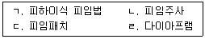
- ㄱ
- ㄴ, ㄷ
- ㄱ, ㄴ, ㄷ
- ㄴ, ㄷ, ㄹ
- ㄱ, ㄴ, ㄷ, ㄹ
(정답률: 알수없음)
31. 임신에 관한 설명으로 옳은 것은?
- 임신 38주가 지난 경우를 지연임신이라 한다.
- 임신 초기에 빈뇨증상이 나타나고 임신 말기까지 지속된다.
- 임신 중 엽산이 결핍되면 태아의 신경관 결손을 초래할 수 있다.
- 카페인은 태아의 성장장애, 지능저하, 행동장애, 뇌기형을 초래한다.
- 임신 초기 에스트로겐과 황체호르몬의 증가로 신체 변화가 생긴다.
(정답률: 알수없음)
32. 다음의 현상을 일컫는 효과는?
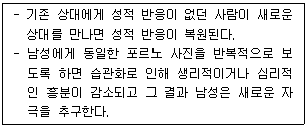
- 방사 효과(radition effect)
- 쿨리지 효과(coolidge effect)
- 가르시아 효과(garcia effect)
- 크레스피 효과(crespi effect)
- 자이가르니크 효과(zeigarnik effect)
(정답률: 알수없음)
33. 남자친구와 늦게까지 술을 마시고 성관계를 하였는데 임신이 되었다고 말하며 흐느끼는 내담자에 대한 상담자의 감정반영으로 옳은 것은?
- 임신 사실을 누구에게 이야기했거나 누가 알고 있나요?
- 지금 도움 받고 싶은 게 무엇인지 말씀해 주시겠어요?
- 산부인과 진료를 받아 보는 것이 도움이 될 것 같아요.
- 술 마신 것을 후회하고 임신에 대해 걱정하고 있군요.
- 늦게까지 술을 마셨기 때문에 성관계를 했고, 그 결과 임신하게 된 거라고 생각하고 있군요.
(정답률: 알수없음)
34. 임신한 15세의 청소년 내담자에 대한 상담자의 개입으로 옳지 않은 것은?
- 내담자의 긴급한 요구사항을 탐색한다.
- 의학적 도움을 받을 수 있도록 의뢰여부를 판단한다.
- 두렵고 당황스러운 내담자의 마음을 공감한다.
- 상담이 진행되면서 중장기적 관점에서 인생계획 등을 논의한다.
- 내담자가 부모에게 알리기를 원치 않을 경우, 철저하게 비밀을 지킨다.
(정답률: 알수없음)
35. 해결중심접근 성상담자의 자세로 옳지 않은 것은?
- 성문제가 발생한 원인을 찾는데 관심을 갖는다.
- 상담자는 적극적이고 목표지향적인 역할을 한다.
- 변화는 일어날 것이며 성문제에 대한 해결은 가능하다고 강조한다.
- 내담자가 자신의 문제를 해결할 수 있는 기술이나 자원을 가지고 있다고 본다.
- 상담자는 내담자와 함께 세운 목표에 근거하여 문제에 대한 해결책을 찾도록 돕는다.
(정답률: 알수없음)
36. 성폭력방지 및 피해자보호 등에 관한 법률에 명시된 성폭력피해상담소의 역할에 해당되는 것을 모두 고른 것은?
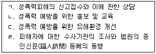
- ㄱ, ㄴ
- ㄴ, ㄷ
- ㄷ, ㄹ
- ㄱ, ㄴ, ㄹ
- ㄱ, ㄴ, ㄷ, ㄹ
(정답률: 알수없음)
37. DSM-5에서 변태성욕장애의 진단 범주에 해당되지 않는 것은?
- 물품음란장애(Fetishistic Disorder)
- 성별불쾌감장애(Gender Dysphoria Disorder)
- 마찰도착장애(Frotteuristic Disorder)
- 노출장애(Exhibitionistic Disorder)
- 전화음란증(Telephone Scatologia)
(정답률: 알수없음)
38. 아동 성교육에서 다루기에 적합한 내용의 개수는?
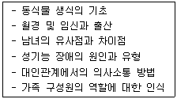
- 2개
- 3개
- 4개
- 5개
- 6개
(정답률: 알수없음)
39. 청소년의 정상적인 성 발달을 돕기 위한 상담자의 역할로 옳은 것을 모두 고른 것은?
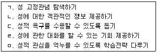
- ㄱ, ㄴ
- ㄷ, ㄹ
- ㄱ, ㄴ, ㄷ, ㄹ
- ㄴ, ㄷ, ㄹ, ㅁ
- ㄱ, ㄴ, ㄷ, ㄹ, ㅁ
(정답률: 알수없음)
40. 성정체감 발달과 장애에 관한 설명으로 옳은 것을 모두 고른 것은?
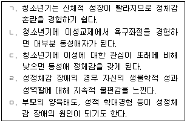
- ㄱ, ㄴ, ㄷ
- ㄱ, ㄹ, ㅁ
- ㄴ, ㄷ, ㄹ
- ㄴ, ㄷ, ㅁ
- ㄷ, ㄹ, ㅁ
(정답률: 알수없음)
41. 성역할에 관한 이론적 설명으로 옳지 않은 것은?
- 행동주의이론: 주위 환경과 상벌체계를 통해 성역할을 배운다.
- 인지발달이론: 성역할 습득을 위해서는 여자와 남자의 차이를 구분할 수 있는 정보처리 능력이 기초되어야 한다.
- 사회학습이론: 부모나 영화 주인공의 행동 관찰을 통해서도 성역할을 배우게 된다.
- 성위계이론: 공식적인 권력을 가진 역할에서 여성이 남성보다 평가절하되고 제약을 받게 된다.
- 성도식이론: 생물학적 특성에 따른 선천적 성별도식을 통해 성역할이 형성된다.
(정답률: 알수없음)
42. 아동ㆍ청소년의 성보호에 관한 법률의 내용으로 옳지 않은 것은?
- 아동ㆍ청소년대상 성범죄의 공소시효는 해당 성범죄가 발생한 날부터 진행한다.
- 누구든지 아동ㆍ청소년대상 성범죄의 발생 사실을 알게 된 때에는 수사기관에 신고할 수 있다.
- 국가는 성폭력 전담의료기관으로 하여금 피해아동ㆍ청소년의 보호자 및 형제ㆍ자매에게 상담을 제공하도록 요청할 수 있다.
- 아동ㆍ청소년대상 성범죄의 피해자 및 그 법정대리인은 형사절차상 입을 수 있는 피해를 방어하고 법률적 조력을 보장하기 위하여 변호사를 선임할 수 있다.
- 아동ㆍ청소년대상 성범죄의 피해자를 증인으로 신문하는 경우 피해자의 신청이 있을 때 부득이한 경우가 아니면 피해자와 신뢰관계에 있는 사람을 동석하게 하여야 한다.
(정답률: 알수없음)
43. 성폭력범죄의 처벌 등에 관한 특례법에 의해 처벌받지 않는 사람은?
- 전철에서 추행한 남성
- 공중화장실에 침입한 후 자위한 남성
- 여성 속옷을 구입해 집에서 자위행위를 한 후 쾌락을 느낀 남성
- 택배로 음란물을 보내서 상대방에게 수치심을 느끼게 한 여성
- 이메일로 자신의 나체 사진을 보내서 상대방에게 수치심을 느끼게 한 여성
(정답률: 알수없음)
44. 성폭력 피해자를 대상으로 집단상담을 진행할 때 고려해야 할 권장 사항이 아닌 것은?
- 폐쇄집단으로 운영한다.
- 동질집단으로 구성한다.
- 소규모 집단으로 구성한다.
- 상담자의 성역할 고정관념을 점검한다.
- 상담자가 원하는 만큼 피해경험을 개방하도록 한다.
(정답률: 알수없음)
45. 성희롱 피해 경험으로 인해 분노, 불안, 수치심을 느끼고 대인관계를 기피하는 내담자에 대한 초기 상담 개입 전략으로 옳지 않은 것은?
- 분노상황을 탐색하고 호소 문제를 구체화한다.
- 불안감소를 위해 이완 기법을 실시한다.
- 수치심과 관련된 감정을 반영해 준다.
- 대인관계 문제 해결을 위해 가해자에 대한 공감 훈련을 한다.
- 부정적 사고목록을 작성해 보고 인지적 오류를 찾아보도록 한다.
(정답률: 알수없음)
46. 성 발달에 관한 설명으로 옳지 않은 것은?
- 영아도 성 반응을 한다.
- 아동도 자기자극을 한다.
- 아동도 성적 환상을 가진다.
- 청소년기부터 성역할이 습득된다.
- 노년기에도 성욕구가 있다.
(정답률: 알수없음)
47. 성욕구에 관한 이론적 관점의 설명으로 옳은 것의 개수는?
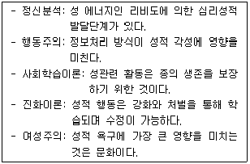
- 1개
- 2개
- 3개
- 4개
- 5개
(정답률: 알수없음)
48. 성과 관련된 용어의 정의로 옳은 것은?
- 젠더(gender): 생물학적 성별 구분을 뜻하며 선천성을 강조한 개념
- 성 유형화(sex typing): 다른 성의 역할을 종일 또는 시간제로 수행하는 것
- 섹슈얼리티(sexuality): 자신이 해부학적으로 남성인가 여성인가에 대한 개념
- 양성성(androgyny): 정신적인 면에서 남녀를 구분하는 개념으로 사회ㆍ문화적 학습을 강조하는 것
- 조건형 성희롱(quid pro quo): 성적 호의나 서비스의 제공 여부에 따라 고용과 업무 평가에서 불이익을 주는 것
(정답률: 알수없음)
49. 태아기 성 분화 증후군에 관한 설명이 올바르게 짝지어진 것은?
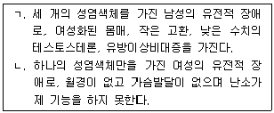
- ㄱ - 터너 증후군, ㄴ - 클라인펠터 증후군
- ㄱ - 터너 증후군, ㄴ - 안드로겐불감성 증후군
- ㄱ - 클라인펠터 증후군, ㄴ - 터너 증후군
- ㄱ - XYY 증후군, ㄴ - 클라인펠터 증후군
- ㄱ - 클라인펠터 증후군, ㄴ - 선천성 부신과형성증
(정답률: 알수없음)
50. ( )에 들어갈 성호르몬을 순서대로 바르게 나열한 것은?
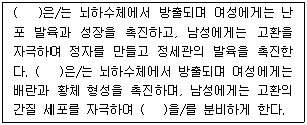
- FSH - LH - 테스토스테론
- FSH - 성선분비자극 호르몬 - LH
- 성선분비자극 호르몬 - FSH - LH
- LH - FSH - 성선분비자극 호르몬
- LH - FSH - 테스토스테론
(정답률: 알수없음)
3과목: 약물상담
51. 이중진단을 받은 내담자를 치료하는 방법 중 다음 설명에 해당되는 모델은?
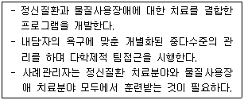
- 순차적 치료모델
- 평행적 치료모델
- 상호작용 모델
- 제3요소 모델
- 통합적 치료모델
(정답률: 알수없음)
52. 다음에 해당하는 치료목표를 지향하는 약물중독자 가족치료는?
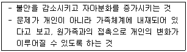
- 해결중심 단기가족치료
- 전략적 가족치료
- 다세대 가족치료
- 구조적 가족치료
- 경험적 가족치료
(정답률: 알수없음)
53. 치료공동체에 관한 설명으로 옳지 않은 것은?
- 문제해결에 있어 “너만 그것을 할 수 있다. 하지만 혼자 힘으로는 할 수 없다.” 라는 신념을 심어준다.
- 문제해결을 위해 사회생활과 연관된 행동적 기술, 태도, 가치에 대한 교육과 훈련을 한다.
- 현재 치료공동체의 기원은 시나넌(Synanon) 프로그램으로부터 시작되었다.
- 개인이 스스로 변화하는 것을 돕는 방법으로 공동체를 활용한다.
- 치료공동체의 조직구조는 직원과 구성원들을 층화하는 하나의 피라미드로 묘사할 수 있다.
(정답률: 알수없음)
54. 다음에 해당하는 학교기반 약물남용 예방프로그램은?
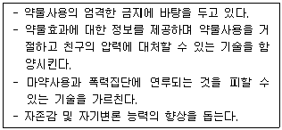
- 폐해감소 프로그램
- 청소년 과도기 프로그램
- 소년약물법원 대체 프로그램
- 약물남용 자각 및 저항 프로그램
- 십대들의 약물사용에 대한 조기개입 프로그램
(정답률: 알수없음)
55. 청소년 약물상담의 과정에서 상담초기에 다루어야 할 과제가 아닌 것은?
- 약물문제를 진단하고 평가한다.
- 구체적인 상담목표를 세운다.
- 상담을 위한 동기화를 시킨다.
- 상담자와 내담자 간의 협력관계를 조성한다.
- 약물사용 욕구를 다루는 대안적 행동을 실행하고 평가한다.
(정답률: 알수없음)
56. 다음에서 설명하고 있는 선별도구는?
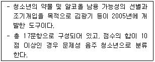
- KAAPI
- AUDIT
- CAGE
- TWEAK
- POSIT
(정답률: 알수없음)
57. 밀러(W. Miller)와 롤닉(S. Rollnick)이 제시한 동기강화상담의 주요 개입 기법이 아닌 것은?
- 요약
- 인정
- 반영적 경청
- 개방형 질문
- 일일 사고 기록
(정답률: 알수없음)
58. 중독행동이 재발될 수 있는 고위험 상황을 모두 고른 것은?
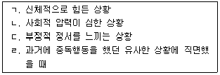
- ㄱ
- ㄱ, ㄴ
- ㄱ, ㄴ, ㄷ
- ㄴ, ㄷ, ㄹ
- ㄱ, ㄴ, ㄷ, ㄹ
(정답률: 알수없음)
59. 중추신경흥분제로 분류할 수 있는 약물을 모두 고른 것은?
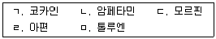
- ㄱ, ㄴ
- ㄱ, ㄷ
- ㄱ, ㄹ
- ㄴ, ㄷ, ㄹ
- ㄴ, ㄷ, ㄹ, ㅁ
(정답률: 알수없음)
60. 약물남용 청소년을 상담할 때, 상담자가 갖추어야 할 자질로 옳지 않은 것은?
- 약물과 관련된 기본적 지식을 숙지하고 있어야 한다.
- 내담자의 계속되는 재발이나 관계형성의 어려움을 견뎌낼 수 있는 내적 힘이 있어야 한다.
- 약물사용을 포함하여 윤리적ㆍ도덕적 문제에 관한 가치판단이 엄격하여야 한다.
- 내담자와 깊은 감정소통을 할 수 있는 감수성을 가져야 한다.
- 사례개념화에 따른 과정별 개입전략을 구체적으로 수립하여 적용할 수 있어야 한다.
(정답률: 알수없음)
61. 헤로인의 금단증상으로 옳은 것을 모두 고른 것은?
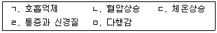
- ㄱ, ㄴ, ㄷ
- ㄱ, ㄷ, ㄹ
- ㄱ, ㄹ, ㅁ
- ㄴ, ㄷ, ㄹ
- ㄷ, ㄹ, ㅁ
(정답률: 알수없음)
62. 약물남용 청소년 중 집단상담에 비해 개인상담이 더 적합한 경우는?
- 동료나 타인들의 이해와 지지가 필요한 경우
- 위기상황에 처해 있고 원인과 해결방법이 복잡하다고 판단되는 경우
- 유대감 및 협동심 향상이 필요한 경우
- 타인들에 대한 배려와 존중을 습득해야 할 것으로 판단되는 경우
- 자신의 관심사나 문제에 관해 타인들의 반응과 조언이 필요한 경우
(정답률: 알수없음)
63. 다음 설명에 해당하는 중독행동에 관한 치료모델은?
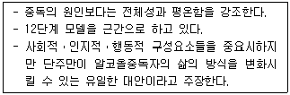
- 영적모델
- 사회문화모델
- 공중보건모델
- 사회학습모델
- 도덕의지모델
(정답률: 알수없음)
64. 고르스키(T. Gorski)와 밀러(W. Miller)의 재발 경고신호가 옳게 짝지어진 것은?
- 긍정적 사고, 스트레스 증가, 분노
- 분노, 스트레스 증가, 우울증 감소
- 스트레스 증가, 분노, 방어적 태도
- 수용적 태도, 통제력 상실, 스트레스 증가
- 스트레스 감소, 충동적 행동, 부정적 사고
(정답률: 알수없음)
65. 알코올의 효과에 관한 설명으로 옳지 않은 것은?
- 알코올은 10%는 위에서, 나머지는 소장에서 흡수된다.
- 혈중 알코올농도가 0.⑤% 이상일 때 사고와 판단력에 영향을 줄 수 있다.
- 일반적으로 여성은 남성과 동일한 양의 술을 마셔도 혈중 알코올 농도가 높아 더 빠르게 술에 취한다.
- 알코올은 중추신경을 흥분시키고 우울 및 불안을 동반한다.
- 장기간 심한 음주를 할 경우, 위궤양과 간경화를 동반할 수 있다.
(정답률: 알수없음)
66. 알코올중독 가정 자녀 중, 약물중독 청소년의 상담에 관한 설명으로 옳지 않은 것은?
- 내담자의 감정표현 능력과 의사소통 기술을 습득하도록 한다.
- 내담자의 비효과적인 행동을 중단하도록 돕는다.
- 내담자의 성장과정에서 겪었던 분노, 상실, 슬픔, 욕구를 다루지 않고 새로운 출발을 하도록 격려한다.
- 내담자에게 부모가 알코올문제가 있다는 것을 인식시키고 새로운 방식으로 가족을 이해하도록 한다.
- 내담자에게 부모의 알코올문제가 자신의 책임이 아님을 인식하도록 한다.
(정답률: 알수없음)
67. 다음 설명에 해당하는 DSM-5의 중독 관련 용어는?
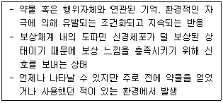
- 내성
- 금단
- 강화
- 재발
- 갈망
(정답률: 알수없음)
68. 보호관찰 청소년의 약물과 알코올 문제 선별을 위해 사용하는 도구로 옳은 것은?
- DAST, RTCQ
- KOADAST-Ⅱ, POSIT
- POSIT, CAST-K
- TWEAK, AUDIT
- KOADAST-Ⅱ, TWEAK
(정답률: 알수없음)
69. NIDA 약물중독 치료의 주요 원리에 관한 설명으로 옳지 않은 것은?
- 효과적인 치료는 약물사용 문제뿐만 아니라 개인의 의료적, 심리적, 사회적, 직업적, 법적문제를 포함한 다양한 욕구에 접근하는 과정을 수반한다.
- 효과적인 치료를 위해서는 최소 3개월 이상의 치료를 지속하는 것이 도움이 된다.
- 중독자가 약물남용과 정신장애를 동반하는 경우, 두 가지 중 정신장애를 먼저 치료해야 한다.
- 해독은 중독치료의 첫 단계에 불과하며, 그 자체만으로는 장기적인 약물사용 문제를 해결하기 어렵다.
- 약물중독으로부터의 회복은 장기적인 과정일 수 있으며 여러 단계의 치료과정이 필요하다.
(정답률: 알수없음)
70. 청소년 약물상담 시 목표설정에 관한 설명으로 옳은 것을 모두 고른 것은?
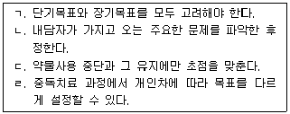
- ㄱ, ㄴ
- ㄱ, ㄷ
- ㄴ, ㄷ
- ㄱ, ㄴ, ㄹ
- ㄱ, ㄴ, ㄷ, ㄹ
(정답률: 알수없음)
71. 다음에서 설명하는 자조모임은?
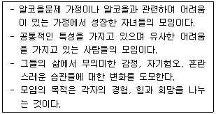
- A.A.
- Alateen
- Al-Anon
- G.A.
- N.A.
(정답률: 알수없음)
72. 청소년 약물예방 중 1차 예방의 내용이 아닌 것은?
- 판매촉진 제한
- 법적 제재의 강화
- 정보전달을 위한 교육
- 주류구매 허용연령 제한
- 고위험 청소년에 대한 조기개입
(정답률: 알수없음)
73. 약물사용에 대한 양가감정을 가진 내담자를 치료하기 위한 인지행동접근이 아닌 것은?
- 이익/손해 분석하기
- 생활양식 분석하기
- 통제신념 찾아내기
- 자동적 사고 기록하기
- 갈망감 대처전략 세우기
(정답률: 알수없음)
74. 보호관찰 약물청소년 상담에서 효과적으로 활용할 수 있는 지역사회 자원이 아닌 것은?
- 내담자의 심리검사결과
- 학교연계 상담
- 의료 기관
- 자원봉사자
- 복지관 집단상담 프로그램
(정답률: 알수없음)
75. 약물남용으로 발생할 수 있는 주요 합병증의 연결이 옳지 않은 것은?
- 알코올 - 췌장염
- LSD - 공황발작
- 본드 - 재생불량성빈혈
- 암페타민 - 무동기증후군
- 코카인 - 울혈성 심부전
(정답률: 알수없음)
4과목: 위기상담
76. 학교 집단따돌림에 관한 상담 전략으로 옳지 않은 것은?
- 다양한 방법으로 피해학생의 자존감을 높여준다.
- 가해학생에게 집단따돌림이 엄연한 폭력임을 인식시킨다.
- 따돌림이 발생한 원인을 찾고 이를 해결하기 위한 방안을 탐색한다.
- 피해학생이 더 이상 피해를 당하지 않도록 피해학생에게 가해학생의 입장을 이해시킨다.
- 가해학생에게 다른 사람의 행동과 감정을 잘 이해할 수 있도록 사회적 인지 능력을 키워준다.
(정답률: 알수없음)
77. 상담자의 소진에 관한 설명으로 옳지 않은 것은?
- 내담자와 과잉동일시하면 소진되기 쉽다.
- 일 자체뿐만 아니라 환경적 요인도 소진에 영향을 미칠 수 있다.
- 과도한 의무감과 성실감에 사로잡혀 있는 사람은 소진되기 쉽다.
- 소진은 개인을 절망하게 하여 개인적ㆍ전문적 성장에 도움이 되지 못한다.
- 소진은 가벼운 에너지 손실에서부터 죽음에 이르기까지 그 심각성의 정도가 다양하다.
(정답률: 알수없음)
78. 자살로 인해 가족이나 가까운 사람을 잃은 자살생존자에 관한 설명으로 옳지 않은 것은?
- 자살생존자는 스스로를 비난하기 때문에 고통 받는다.
- 분노는 자살생존자가 겪는 가장 흔한 감정 중 하나이다.
- 자살생존자는 종종 자살에 관한 사회ㆍ문화적 낙인에 대처하는 데 부담감을 느끼게 된다.
- 자살생존자의 상담자는 자살의 결과로 나타나는 현실적인 문제에 관한 해결을 도와야 한다.
- 자살생존자에게 상실에 대한 경험을 이야기하게 하는 것은 과거의 상황을 재경험하게 하므로 피하는 것이 좋다.
(정답률: 알수없음)
79. 다음에서 설명하는 학교폭력 발생 원인에 관한 이론적 관점은?
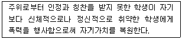
- 사회통제적 관점
- 모멸극복적 관점
- 긴장이론적 관점
- 정신분석적 관점
- 학습이론적 관점
(정답률: 알수없음)
80. 자살이론의 특징을 다음과 같이 설명한 학자는?
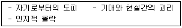
- 융(C. Jung)
- 벡(A. Beck)
- 호나이(K. Horney)
- 메닝거(K. Menninger)
- 바우마이스터(R. Baumeister)
(정답률: 알수없음)
81. 청소년 자살에 관한 설명으로 옳은 것은?
- 낮은 지능지수는 아동기 자살 행동의 예측인자이다.
- 청소년의 자해나 자살에 대한 암시 혹은 위협은 자살의 위험 징후는 아니다.
- 청소년 자살은 성인에 비해 우울증 등의 정신질환의 극단적 표현인 경우가 많다.
- DSM-5의 진단기준에 따르면, 자살사고나 자살행동은 정신질환으로 분류되지 않는다.
- 여자청소년은 남자청소년에 비해 우울감이 높고, 자살사고와 시도를 많이 하므로 자살성공률도 더 높다.
(정답률: 알수없음)
82. 학교폭력에 관한 설명으로 옳지 않은 것은?
- 정서적 폭력은 여학생에게 좀 더 많이 나타난다.
- 학교폭력의 발생 연령이 낮아지고 있는 추세이다.
- 집단화되고 사소한 일탈을 넘어 심각한 범죄 수준에 이르고 있다.
- 가해학생들의 학교폭력에 대한 인식이 둔감해지고 일상화되어 폭력으로 인식하지 못하는 경향이 있다.
- 학교폭력예방 및 대책에 관한 법률상 학교폭력이란 학교 내에서 학교 구성원을 대상으로 발생하는 신체ㆍ정신 또는 재산상의 피해를 수반하는 행위를 말한다.
(정답률: 알수없음)
83. 학교폭력 예방 및 대책에 관한 법령상 학교의 장이 가해학생에게 출석정지 조치를 할 수 있는 경우가 아닌 것은?
- 피해학생이 장애인인 경우
- 학교폭력을 행사하여 전치 2주 이상의 상해를 입힌 경우
- 2명 이상의 학생이 고의적ㆍ지속적으로 폭력을 행사한 경우
- 학교폭력에 대한 신고, 진술, 자료제공 등에 대한 보복을 목적으로 폭력을 행사한 경우
- 학교의 장이 피해학생을 가해학생으로부터 긴급하게 보호할 필요가 있다고 판단하는 경우
(정답률: 알수없음)
84. 트라우마 체계치료의 치료단계에 관한 설명으로 옳은 것을 모두 고른 것은?
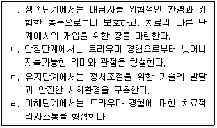
- ㄱ, ㄴ
- ㄱ, ㄷ
- ㄱ, ㄷ, ㄹ
- ㄴ, ㄷ, ㄹ
- ㄱ, ㄴ, ㄷ, ㄹ
(정답률: 알수없음)
85. 부모의 이혼을 경험한 자녀의 일반적인 특징으로 옳지 않은 것은?
- 자신을 비난하며 이혼에 대한 책임감을 느낀다.
- 부모화로 인해 독립적이고 자율적인 성격을 형성한다.
- 상황이 좋아지면 부모가 재결합할 것이라는 환상을 가진다.
- 부모로부터 신체적ㆍ정신적으로 유기 당할지도 모른다는 분리불안을 경험한다.
- 부모 중 누군가를 선택해야 하는 압박감을 느낄 때 충성심 갈등을 경험한다.
(정답률: 알수없음)
86. 트라우마 체계치료의 치료 원리로 옳지 않은 것은?
- 먼저 안전을 확보한다.
- 무너진 체계를 조정하고 복원한다.
- 완벽한 체계를 복구할 때까지 계속적으로 지원한다.
- 사실에 근거하여 명확하고 초점화된 계획을 만든다.
- 내담자가 준비되지 않았을 때 개입을 시작하지 않는다.
(정답률: 알수없음)
87. 골란(N. Golan)의 위기단계를 순서대로 바르게 나열한 것은?
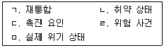
- ㄴ - ㄷ - ㅁ - ㄹ - ㄱ
- ㄴ - ㄹ - ㄷ - ㅁ - ㄱ
- ㄹ - ㄴ - ㄷ - ㅁ - ㄱ
- ㄹ - ㄷ - ㄴ - ㅁ - ㄱ
- ㄹ - ㅁ - ㄴ - ㄷ - ㄱ
(정답률: 알수없음)
88. DSM-5에서 분류된 외상후 스트레스장애(PTSD)에 관한 설명으로 옳지 않은 것은?
- PTSD의 침습적 기억은 우울성 반추와 달리 불수의적이고 고통스러운 기억에만 한한다.
- PTSD는 일생 동안 남성보다 여성에게서 흔히 발견된다.
- PTSD의 외상 전(前) 요인에 유전적 요인은 포함되지 않는다.
- PTSD의 외상 전(前) 요인에 기질적 요인은 6세까지의 아동기의 감정적 문제를 포함한다.
- 아동의 경우 동반이환(comorbidity) 양상으로 반항장애와 분리불안장애가 주가 된다.
(정답률: 알수없음)
89. 급성 스트레스장애의 진단적 특징으로 옳은 것을 모두 고른 것은?
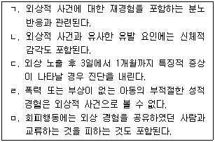
- ㄱ, ㄴ
- ㄱ, ㄷ, ㄹ
- ㄴ, ㄷ, ㅁ
- ㄱ, ㄴ, ㄷ, ㄹ
- ㄱ, ㄴ, ㄷ, ㄹ, ㅁ
(정답률: 알수없음)
90. 위기의 특성에 관한 설명으로 옳지 않은 것은?
- 현재의 자원과 대처기제로는 감당하기 어렵다.
- 위기는 보편성과 고유성을 가지고 있다.
- 위기에 처한 사람은 항상성이 깨져서 압도감을 경험한다.
- 다른 사람의 도움을 받는다면 장기적인 문제로 발전하지 않을 수 있다.
- 위기개입의 초기단계에서 이전의 기능 수준으로 회복하도록 하기 위해 전반적인 삶의 패턴을 변화시켜야 한다.
(정답률: 알수없음)
91. 예측할 수 없는 충격적인 사건 후 경험할 수 있는 반응으로 옳지 않은 것은?
- 혼자 있으려는 철수 행동을 보인다.
- 충격적인 사건으로 정서 경험이 확장된다.
- 내 자신, 타인, 세상에 대한 신념이 뿌리째 흔들린다.
- 미래가 단축된 느낌으로 직업, 결혼 등을 기대하지 않는다.
- 충격적인 사건과 관련된 대화, 생각, 느낌을 피하기 위해 필사적으로 노력한다.
(정답률: 알수없음)
92. 위기상담 과정에서 현실감을 유지하도록 하는 기법은?
- 비디오 기법
- 외상을 은유화하기
- 그라운딩(grounding)
- 안전한 공간 만들기
- 지속적 노출(prolonged exposure)
(정답률: 알수없음)
93. 다음은 마이어(R. Myer)와 제임스(R. James)의 위기개입 6단계 모델 중 어느 단계의 지침인가?
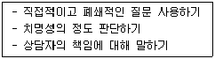
- 안전 확보하기
- 지지 제공하기
- 문제 정의하기
- 대안 탐색하기
- 계획 수립하기
(정답률: 알수없음)
94. 위기청소년 상담 시 우선적으로 사정해야 할 사항이 아닌 것은?
- 인지 구조
- 위기의 심각성
- 주변의 지원체계
- 자기파괴적인 행동
- 성공적이었던 대처기제
(정답률: 알수없음)
95. 제임스(R. James)와 길리랜드(B. Gilliland)가 분류한 위기의 유형 중 다음에 해당하는 위기는?
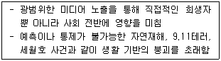
- 체계적 위기
- 심리적 위기
- 상황적 위기
- 실존적 위기
- 발달적 위기
(정답률: 알수없음)
96. 위기상담의 원리로 옳은 것을 모두 고른 것은?
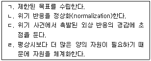
- ㄱ, ㄴ
- ㄴ, ㄷ
- ㄱ, ㄷ, ㄹ
- ㄴ, ㄷ, ㄹ
- ㄱ, ㄴ, ㄷ, ㄹ
(정답률: 알수없음)
97. 학업중단 숙려제에 관한 설명으로 옳지 않은 것은?
- 학업중단 숙려제의 목적은 학업중단을 결정하기 전 학생에게 신중한 선택을 할 수 있도록 기간을 부여하는 것이다.
- 적용 대상은 학업중단 위기에 처해 있다고 판단되는 초ㆍ중ㆍ고교생이다.
- 숙려기간은 시ㆍ도교육청별로 차이가 있으나 최소 2주 이상을 권장한다.
- 적용 대상인 학생은 의무적으로 학업중단 숙려기간을 거쳐야 한다.
- 학업중단 숙려제는 상담만으로 이루어지지 않는다.
(정답률: 알수없음)
98. 학교폭력 가해자 관련 위험요인이 아닌 것은?
- 부모의 권위 있는 양육태도
- 주의집중 장애
- 신경심리적 결함
- 낮은 좌절 인내력
- 자기와 관련된 피해의식
(정답률: 알수없음)
99. 위기 사건을 연상시키는 촉발요인 다루기에 해당하는 것을 모두 고른 것은?
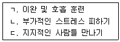
- ㄱ
- ㄷ
- ㄱ, ㄴ
- ㄴ, ㄷ
- ㄱ, ㄴ, ㄷ
(정답률: 알수없음)
100. 학교폭력 예방사업에 관한 설명으로 옳지 않은 것은?
- Wee센터에서는 고위기 학생 대상 심리치료를 지원한다.
- 유해정보 차단을 위해 사이버 안심존 서비스를 제공한다.
- 어깨동무학교 운영을 통해 올바른 또래문화 형성을 지원한다.
- 메모로(MEMORO) 프로젝트는 장애학생 이해와 폭력 예방을 위한 프로그램이다.
- 학생자치법정 운영을 통해 경미한 교칙위반에 대하여 학생 스스로 벌칙을 부과하게 하여 준법의식을 제고한다.
(정답률: 알수없음)